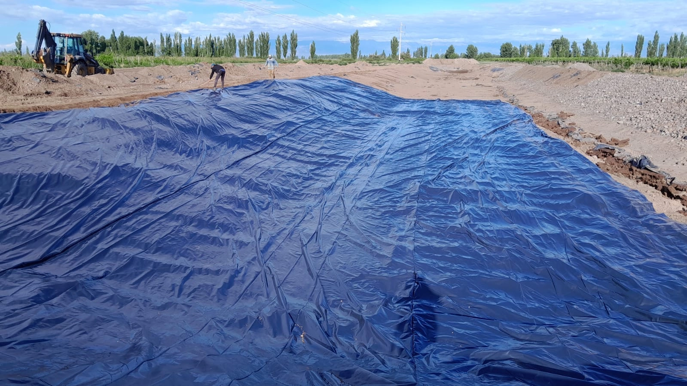
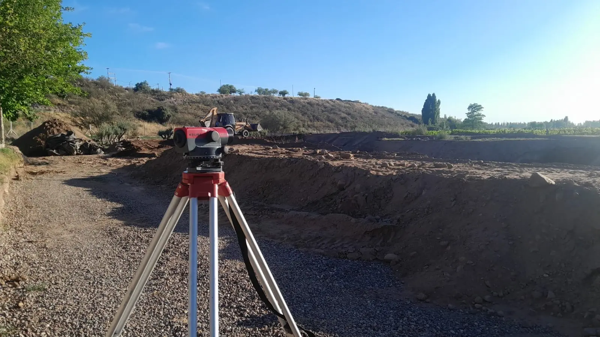
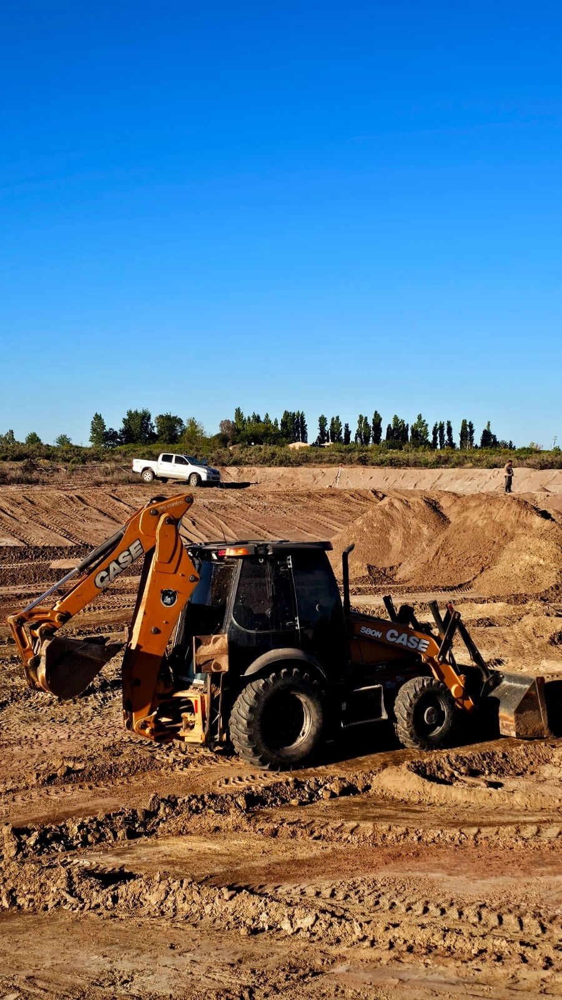

Ingeniería Hídrica y Desarrollo de Terrenos
Soluciones de infraestructura robusta y precisión técnica. Transformamos los desafíos del territorio en rentabilidad operativa para el sector agrícola e industrial.

Construcción de Reservorios Agrícolas
Diseñamos y ejecutamos represas a medida para asegurar la disponibilidad de agua los 365 días del año. Nuestra ingeniería contempla el cálculo volumétrico exacto según las necesidades de tu cultivo, garantizando una reserva estratégica contra cortes de turno y variaciones climáticas.
Solicitar Presupuesto
Impermeabilización con Geomembrana
Blindamos tu inversión hídrica. Aplicamos barreras sintéticas de polietileno de alta densidad (PEAD) mediante termofusión de precisión. Realizamos ensayos de calidad (QA/QC) con pruebas de vacío y canal de aire para garantizar cero filtraciones y máxima durabilidad.
Solicitar Presupuesto
Movimiento de Suelo y Nivelación
Preparación topográfica de alta precisión. Contamos con maquinaria pesada propia para ejecutar excavaciones, terraplenes y nivelación de terrenos, asegurando las pendientes y bases estructurales óptimas para tus proyectos agronómicos o civiles.
Solicitar Presupuesto
Desmontes y Limpieza de Terrenos
Ampliamos tus fronteras productivas de manera eficiente y controlada. Realizamos la apertura de nuevas áreas para cultivo o infraestructura mediante maquinaria especializada, asegurando un despeje rápido y la correcta disposición del material vegetal.
Solicitar Presupuesto
Sistemas de Riego Tecnificado
Maximizamos la productividad de cada gota. Instalamos sistemas de riego por goteo y aspersión que incluyen el diseño de cabezales, filtrado, bombeo y fertirriego. Llevamos el agua y los nutrientes exactos directo a la raíz de tu cultivo.
Solicitar Presupuesto
Obras Hidráulicas y Complementarias
Desarrollamos infraestructura mayor para la conducción y control del agua. Construimos canales, sistemas de drenaje, estructuras de captación (tomas), by-pass y compuertas, asegurando un manejo integral y seguro de los caudales en tu propiedad.
Solicitar Presupuesto